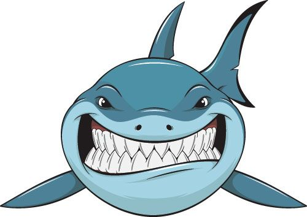
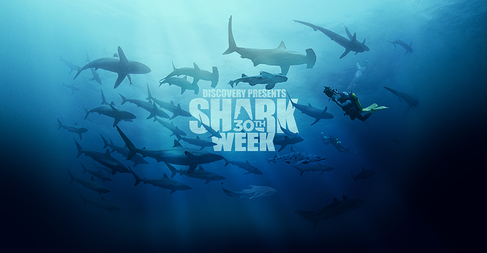

Shark Week is a 7 Day TV Special that Happens Every Summer
The Discovery Channel has been putting out new specials on different types of sharks every year, many specials follow marine biologists to the middle of the ocean on small boats to lure sharks out of the ocean. Some other specials include following shark attack survivors stories, and shark conservation. The discovery channel produces content that takes place globally such as South Africa, Australia, the USA and the Bahamas.

Air Jaws
Air Jaws is a popular special that airs during shark week. It shows shark breaches. A breach is when a Great White Shark jumps all the way out of the water for food. The way that it works is the scientists will bait the a shark infested area with a fake seal floating on the surface, then they will wait for the shark to pounce. Often times, sharks will do a full breach, meaning that they will come out of the water entirly.It is quite a majestic site to see!

Here is a video of a live Great White Shark Breach